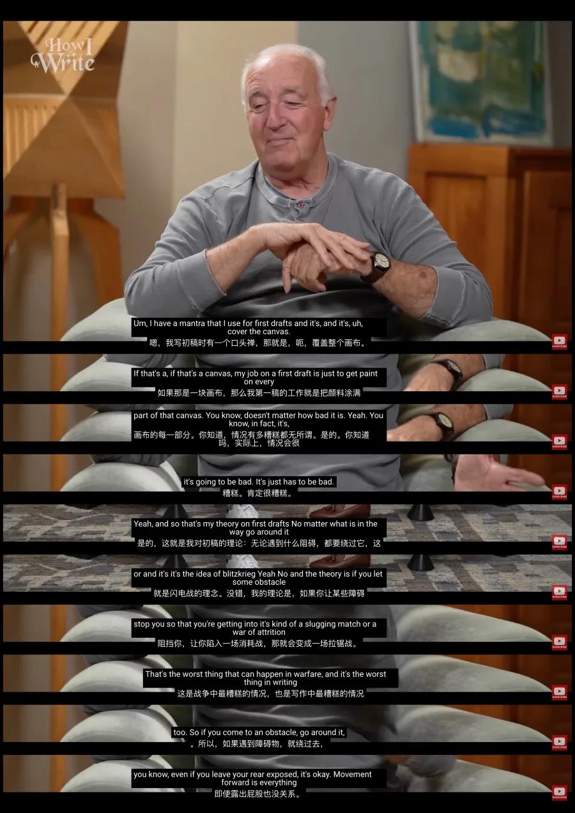

《一生之敌》作者史蒂文·普雷斯菲尔德：对于初稿，我有一句一直信奉的准则，那就是"覆盖画布的所有角落"。我在写初稿时的任务就是把这块画布的每一部分都涂上颜料。
写得有多烂并不重要；事实上，它肯定会很烂，但它必须存在。
这就是我对初稿的理论：无论什么挡在面前，绕过它。这就像是"闪电战"的概念。
核心在于，如果你让某些障碍阻止了你，导致你陷入某种消耗战或拉锯战，那是战争中最糟糕的情况，在写作中也同样如此。
如果你遇到障碍，绕过去。即便这会让你屁股露出来，也没关系。
在初稿阶段，向前推进才是一切。
习惯和习惯之间不是独立的，是串联起来的。
早上我先去散步，顺其自然的把口喷也做了，编辑一下就可以发公众号了。
傍晚我去游泳，非常消耗体力，疲惫让我不得不早点睡觉，而且21点把手机交给了家人，自然而然就早睡早起了。
早起外面不热，空气新鲜，散步也会变得更有动力。
而如果没有这样的设计，而只是把每一个习惯，当作单独的习惯养成，每一个习惯，都需要耗费精力和意志力去坚持，断更是迟早的事情。
而且一断，内心对自己的评价降低，有挫败感，为了避免下次还会断，干脆就不重新开始，再捡起来就会很困难。
这就是为什么21天习惯养成的说法，纯粹是扯淡。
如果没有对行为结构的设计有所觉察，以及内在对待失败的看法彻底转变，那么持之以恒像天方夜谭，对自我意志力的伤害很大。
意志力会随心情、能量状态波动，"心情好的时候可以做到，心情不好、没有能量的时候就做不到"。
21 天法把整个系统的可靠性，赌在了这个全天下最不可靠的变量上。
最小阻力之路不跟这个变量打交道。
最小阻力之路的逻辑不是"逼自己重复到习惯"，而是设计两件事：
1、有没有真的张力（一个让你精神紧张、坐卧不安的愿景和现状之间的落差——就像爱因斯坦一个难题，困扰了他十年，Day 4）；
2、能不能把河床本身挖平（比如我在 Day 3 描述的黑板笔放在必经之路上、物理番茄钟替代手机）。
张力负责提供不依赖意志力的持续拉力，河床负责让行动本身变得毫不费力。
这两件事一旦同时成立，行为从第一天起就顺流而下，根本不存在"练到第 21 天才自动"这回事——它一开始就是最省力的选择，不需要被训练成自动。
重复并不会让一件事变得容易。在《一生之敌》里，作者史蒂文·普雷斯菲尔德也强调了，就算每天都克服了重新开始写作的难题，但是第二天早上起床，要重新回到书桌上，继续写作，依旧阻力是巨大的，并没有因为重复而变得轻松和容易。
海明威之所以头一天写到知道接下来该怎么写的时候就停笔，是因为这种"知道接下来怎么写"所产生的结构性张力，会在第二天拉着他回到书桌前继续写作。
写到这里，一开始我写的散步+口喷；游泳+早睡，并不是愿景和现状的结构性张力。
它更像是习惯的多米诺骨牌，第一张倒了，后面的习惯就会跟着倒。
但如果一旦第一张牌没倒，比如早上下雨了没去散步，晚上出去聚餐了没有游泳，那么后续的口喷和早睡就很容易都断了。
而我要去挖掘，我为什么要口喷写作，我为什么要早睡的更大愿景和渴望。
那么无论什么场景，我都会做的渴望。
那份33天后，3万字的自我研究报告。
我倒要看看，我的思维模式到底是什么样的，为什么我遇到困难就要逃避，我到底在恐惧什么？
先了解自己，再了解渴望成为的人的缩影，看到差距，然后模仿。
无论下雨晴天，散步不散步，我都会写作，我要完成那份自我研究报告。
用口喷写作了解自己是最省力的过程，每一个人都可以做到。
（这就是思考生成的过程，一开始先假设某个论点是正确的，推导着推导着发现不太合理，于是有了新思考的生成。）
今日开喷指引卡
打开录音，可以试着说：
1、给当时的自己打个电话
回想一个你曾经坚持过一阵子的习惯——运动、早起、写日记、背单词，随便哪个都行。先说说它顺利的时候是什么样子，你当时靠的是什么撑住的；再说说它断掉的那一刻，发生了什么。说完，给那个刚断掉的自己打个电话：告诉TA，这不是TA的问题，不是TA不够有毅力，也不是TA没有恒心，只是结构设计的不对。
2、继续找你自己的"追光实验"
不靠任何前一件事触发，不需要任何链条，哪怕天塌下来你都会自己走回去做的那件事，是什么？它背后那个不需要被提醒、自己会回来找你的渴望，到底是什么？ 尝试说得更加清晰。
现状是：还没有喷。
开录之后，不用暂停，说够15分钟，沉默、语气词也算。
说完可以来群里分享：「Day 5 ✅ + 你那个不需要多米诺骨牌、自己就会拉你回去的渴望是什么」。
—— 云不见 · 2026.07.11